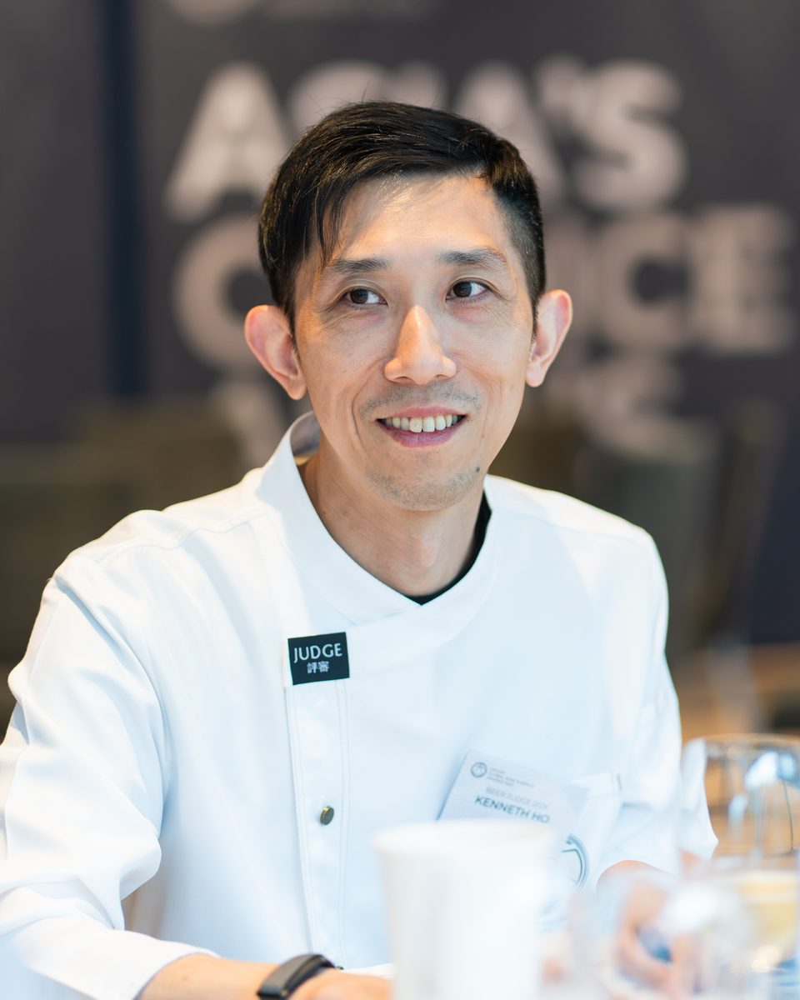
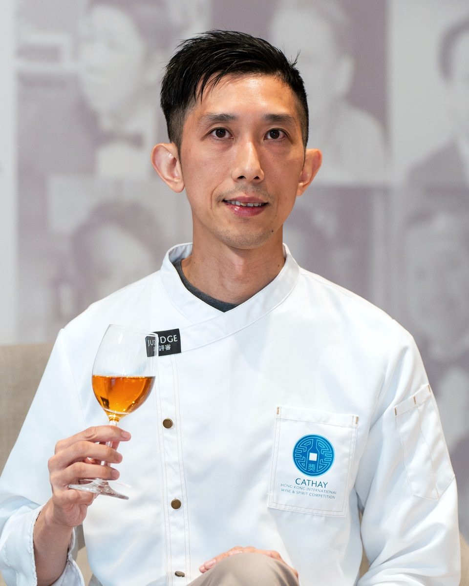
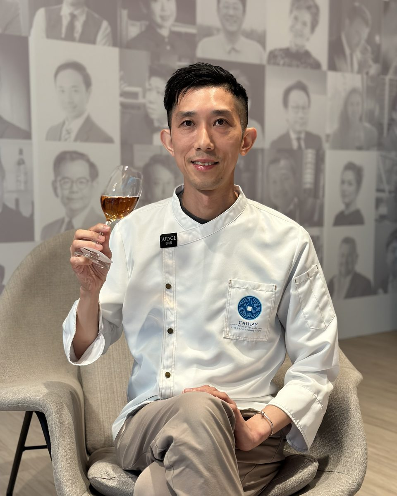

Senior Mentor · Master Brewer
A.V. Ganesh Ramu
ನಮ್ಮ ಅತ್ಯಂತ ಹಿರಿಯ ಮೆಂಟರ್. Institute of Brewing and Distilling ನಿಂದ Master Brewer, ಜರ್ಮನಿ, ಯುಕೆ, ನ್ಯೂಜಿಲೆಂಡ್, ಸಿಂಗಾಪುರ ಮತ್ತು ಭಾರತದಲ್ಲಿ ಬ್ರೂಯಿಂಗ್ನಲ್ಲಿ 38 ವರ್ಷಗಳ ಅನುಭವ.
Best on a laptop or desktop: the maps, filters and tables have more room there.
Kenneth ಒಬ್ಬ ಬಿಯರ್ ಶಿಕ್ಷಕ, National Beer Judge ಮತ್ತು ಬಿಯರ್ ಬರಹಗಾರ. ಏಷ್ಯಾ ಮತ್ತು ಗ್ರೇಟರ್ ಚೀನಾದಾದ್ಯಂತ ಬಿಯರ್ ಶಿಕ್ಷಣಕ್ಕೆ ವಿಶ್ವ ಮಟ್ಟದ ಗುಣಮಟ್ಟ ತರುವುದೇ ಅವರ ಕೆಲಸ.
ಅವರು WSET ಮತ್ತು Cicerone ಎರಡಕ್ಕೂ ಬಿಯರ್ ಶಿಕ್ಷಕ. ಮಾನ್ಯತೆ ಪಡೆದ National Beer Judge ಹಾಗೂ British Guild of Beer Writers ಸದಸ್ಯರೂ ಹೌದು. ಒಂದೇ ತರಗತಿಯಲ್ಲಿ ಬ್ರೂಯಿಂಗ್ ವಿಜ್ಞಾನ, ಎಚ್ಚರಿಕೆಯ sensory ವಿಶ್ಲೇಷಣೆ ಮತ್ತು ಅಂತಾರಾಷ್ಟ್ರೀಯ ಸ್ಪರ್ಧೆಗಳಲ್ಲಿ ತೀರ್ಪುಗಾರರಾಗಿ ಕಲಿತದ್ದನ್ನು ಜೋಡಿಸುತ್ತಾರೆ.
ಹಾಸ್ಪಿಟಾಲಿಟಿ ನಾಯಕರು, ಬ್ರೂವರಿಗಳು, ವ್ಯಾಪಾರ ಸಂಘಗಳು ಮತ್ತು ಡ್ರಿಂಕ್ಸ್ ವೃತ್ತಿಪರರ ಜೊತೆ ಕೆಲಸ ಮಾಡಿದ್ದಾರೆ. ಸರ್ಟಿಫಿಕೇಶನ್ ಕೋರ್ಸ್ಗಳನ್ನು ನಡೆಸುತ್ತಾರೆ, ದೊಡ್ಡ ಸ್ಪರ್ಧೆಗಳಲ್ಲಿ ತೀರ್ಪು ನೀಡುತ್ತಾರೆ, ಏಷ್ಯಾದಲ್ಲಿ ಕ್ರಾಫ್ಟ್ ಬಿಯರ್ ಹೇಗೆ ಬದಲಾಗುತ್ತಿದೆ ಎಂದು ಬರೆಯುತ್ತಾರೆ.



ನಮ್ಮ ಅತ್ಯಂತ ಹಿರಿಯ ಮೆಂಟರ್. Institute of Brewing and Distilling ನಿಂದ Master Brewer, ಜರ್ಮನಿ, ಯುಕೆ, ನ್ಯೂಜಿಲೆಂಡ್, ಸಿಂಗಾಪುರ ಮತ್ತು ಭಾರತದಲ್ಲಿ ಬ್ರೂಯಿಂಗ್ನಲ್ಲಿ 38 ವರ್ಷಗಳ ಅನುಭವ.
United Breweries, SABMiller ಮತ್ತು AB InBev ನ R&D ಯಲ್ಲಿ ಕೆಲಸ ಮಾಡಿದ Master Brewer, ನಂತರ ಡೇಟಾ ಸೈಂಟಿಸ್ಟ್ ಆಗಿ AB InBev ನ ಜಾಗತಿಕ ವ್ಯವಹಾರ ಘಟಕಗಳಿಗಾಗಿ AI ಮತ್ತು GenAI ಕಟ್ಟಿದವರು.
ಜಾಹೀರಾತು ಕ್ಷೇತ್ರದಲ್ಲಿ 30+ ವರ್ಷಗಳು ಮತ್ತು ಕ್ರಾಫ್ಟ್ ಬಿಯರ್ ಬಗ್ಗೆ ಆಳವಾದ ಒಲವು. ಪ್ರತಿ ಸೆಷನ್ಗೂ ಬಿಯರ್ನ ಕಥೆಗಳು, ಬ್ರ್ಯಾಂಡಿಂಗ್ ಮತ್ತು ವ್ಯವಹಾರವನ್ನು ತರುತ್ತಾರೆ.
ಸಾಮಾಜಿಕ ಜವಾಬ್ದಾರಿ, ಶಿಕ್ಷಣ ಮತ್ತು ಕಾರ್ಯಾಚರಣೆಯಲ್ಲಿ 15+ ವರ್ಷಗಳು, ಪ್ರತಿ ಬ್ಯಾಚ್ ಅನ್ನು ಧಾನ್ಯದಿಂದ ಗ್ಲಾಸ್ವರೆಗೆ ಸುಗಮವಾಗಿ ನಡೆಸುತ್ತಾರೆ.
TU Munich ನ Weihenstephan ನಲ್ಲಿ ತರಬೇತಿ ಪಡೆದ ಜರ್ಮನ್ ಶೈಲಿಯ Brewmaster, ಆಹಾರ ಜೈವಿಕ ತಂತ್ರಜ್ಞಾನದಲ್ಲಿ M.Tech. ಪದವಿ. JW Marriott Chandigarh ಮತ್ತು ಭಾರತದ ಮೊದಲ ಜರ್ಮನ್ ಬ್ರೂವರಿ Rockmann Beer Island ಗೆ Consultant Brew Master ಆಗಿ ಒಂದು ದಶಕ, ಆರಂಭ ಮತ್ತು ಅಬಕಾರಿಯಿಂದ ಇಳುವರಿ ಮತ್ತು ಖರೀದಿಯವರೆಗೆ.
ಒಂದು ಕೋರ್ಸ್ ಆರಿಸಿ, ಅಥವಾ ನಿಮಗೆ ಯಾವುದು ಹೊಂದುತ್ತದೆ ಎಂದು ನಮ್ಮನ್ನು ಕೇಳಿ.
ನಮ್ಮೊಂದಿಗೆ ಮಾತನಾಡಿ